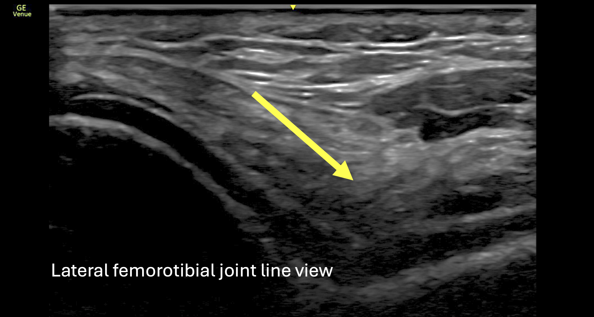
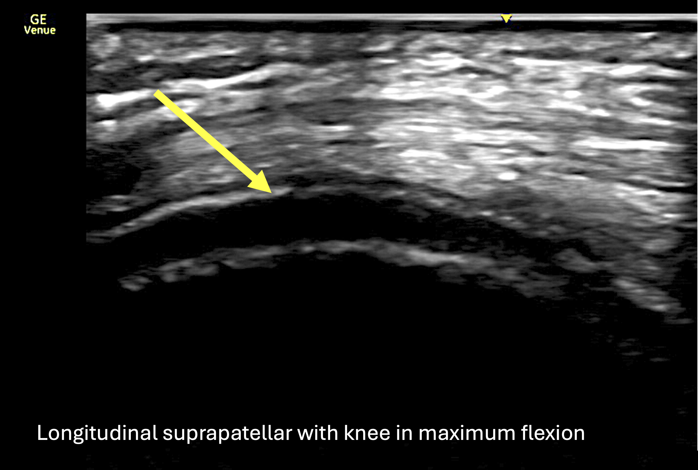

Case 2 of 5
Gout in the Knee
Case Vignette
A 38-year-old male presents with 3 weeks of left knee pain. (Expand for full history & exam.)
A 38-year-old male presents with 3 weeks of left knee pain. He first injured this knee while running 10 years ago and nearly recovered with physiotherapy, but has experienced intermittent episodes of left knee pain and swelling for the past 5 years — often occurring every few months and sometimes triggered by camping, increased alcohol intake, or red meat. He has never had classic podagra.
Over the past 3 weeks, he has developed an acute flare of left knee pain with warmth, swelling, and limited range of motion due to pain and effusion, though symptoms have improved with Celebrex. He occasionally experiences mild right knee discomfort.
He is otherwise well, with no inflammatory back pain, dactylitis, uveitis, or constitutional symptoms. He takes no long-term medications, works as a software engineer, jogs intermittently, does not smoke, uses cannabis occasionally, and drinks about two servings of alcohol per week.
On examination: afebrile, HR 89, BP 136/80, BMI 28. Bilateral knee effusion and warmth, larger on the left. Tenderness along the medial and lateral joint lines on the left. No focal tenderness along the quadriceps, infrapatellar, or Achilles insertion. No skin rashes or tophi.
Select all correct answers.
History of preceding infections: Gastrointestinal or genitourinary infections should be asked about in a young male with oligo-arthritis to assess for reactive arthritis.
Family history of gout: Gout is a strong candidate given the acute onset, dietary triggers, and NSAID response.
History of Raynaud's: Connective tissue disease is not the most likely diagnosis here.
Bedside Ultrasound — Bilateral Knees



Select all correct answers.
HLA-B*27: Not used as a confirmatory test, though its presence has prognostic value in spondyloarthritis.
Urate serum level: Elevated uric acid supports a gout diagnosis, though it can be normal during an acute flare.
MRI of the knee: Likely to detect synovitis and effusion but not the best modality for gout. Dual-energy CT (DECT) is more favourable for urate crystal detection.
Uric acid 559 µmol/L, CRP 18 mg/L, negative RF, anti-CCP, and HLA-B*27. Arthrocentesis of the left knee reveals WBC 5,966 (predominantly neutrophils and monocytes), RBC 2,000, negative culture. Polarized light microscopy shows needle-shaped, negatively birefringent crystals, consistent with monosodium urate.